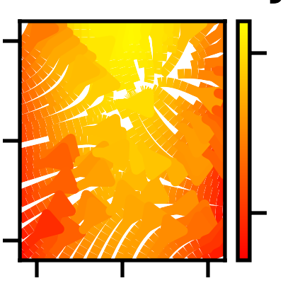

pyvista.ChartMPL#
- class ChartMPL(figure=None, size=(1, 1), loc=(0, 0))[ソース]#
既存のmatplotlibの図から新しいチャートを作成します．
- パラメータ
- figure
matplotlib.figure.Figure 描画するmatplotlibの図形．
- size :
listかtuple,optionalpython:list か python:tuple, optional 正規化された座標におけるチャートのサイズです．サイズが
(0, 0)の場合は不可視で，(1, 1)の場合はレンダラーの幅と高さをすべて占めます．- loc :
listかtuple,optionalpython:list か python:tuple, optional 正規化された座標におけるチャートの位置（左下隅）です．
(0, 0)という位置はレンダラーの左下に相当し，(1, 1)という位置はレンダラーの右上に相当します．
- figure
例
ベクトル場の流線を様々な色でプロットします（ この例 を参考にしています）．
>>> import pyvista >>> import numpy as np >>> import matplotlib.pyplot as plt
>>> w = 3 >>> Y, X = np.mgrid[-w:w:100j, -w:w:100j] >>> U = -1 - X**2 + Y >>> V = 1 + X - Y**2 >>> speed = np.sqrt(U**2 + V**2)
>>> f, ax = plt.subplots() >>> strm = ax.streamplot(X, Y, U, V, color=U, linewidth=2, cmap='autumn') >>> _ = f.colorbar(strm.lines) >>> _ = ax.set_title('Streamplot with varying Color') >>> plt.tight_layout()
>>> chart = pyvista.ChartMPL(f) >>> chart.show()

メソッド
ChartMPL.show([off_screen, full_screen, ...])このチャートを自作のプロッターに表示します．
チャートの表示を切り替えます．
アトリビュート
チャートの背景色を返すか設定します．
チャートの背景テクスチャーを返すか設定します．
チャートの境界線色を返すか設定します．
チャートの境界線スタイルを返すか設定します．
チャートの境界線幅を返すか設定します．
このチャートに関連するmatplotlibの図を取得します．
チャートの凡例の可視性を返すか設定します．
正規化された座標でチャートの位置を返す，または設定します．
左下から見たチャートの位置（単位はピクセル）．
正規化された座標でチャートのサイズを返す，または設定します．
チャートのタイトルを返すか設定します．
チャートの見え方を返すか設定します．